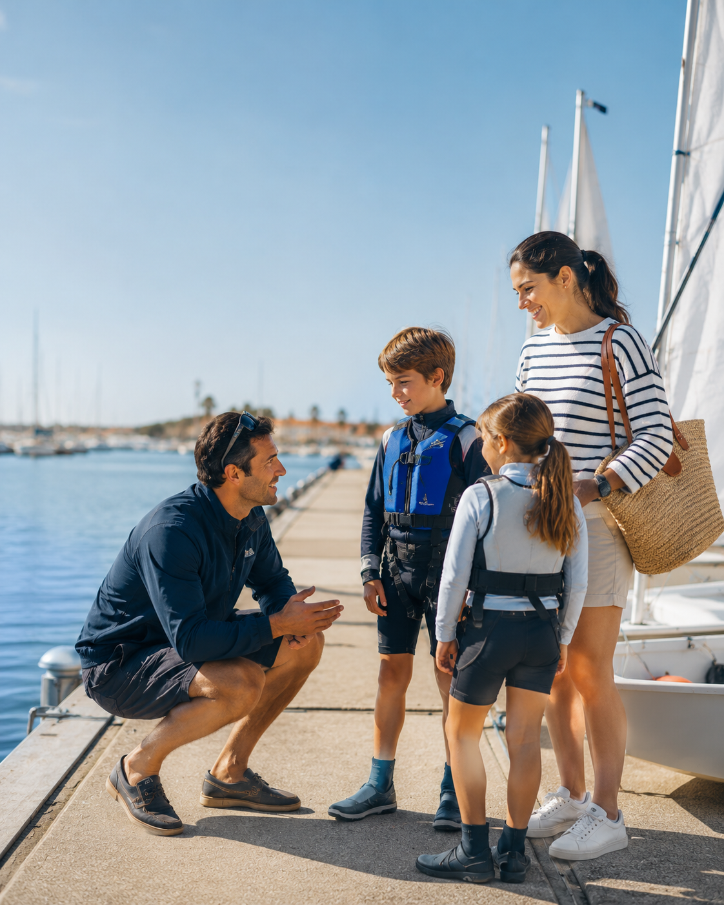
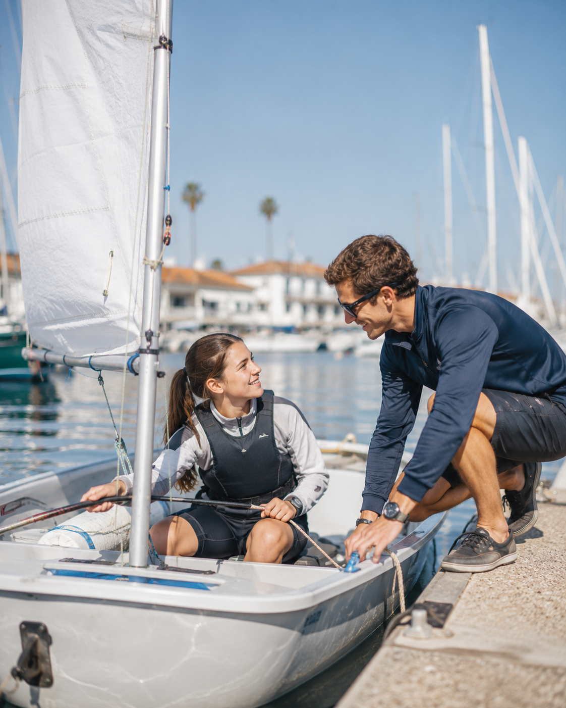

01
Sou família
Quero perceber como uma criança pode começar na vela e encontrar uma escola adequada.
Encontrar escola →Uma porta de entrada simples para quem quer experimentar, aprender e fazer parte da comunidade.
Sem jargão. Sem complicações. Só o próximo passo certo.

Quero perceber como uma criança pode começar na vela e encontrar uma escola adequada.
Encontrar escola →
Descobre clubes, experiências de iniciação e o que precisas para o primeiro dia.
Ver clubes →
Da licença desportiva às classes e provas: um percurso claro para entrar em competição.
Explorar competição →Em Portugal, a vela liga aprendizagem, desporto e cultura marítima. Dos primeiros contactos com o vento à competição, existe um percurso para diferentes idades e objetivos.
Conhecer a embarcação, o vento e os princípios essenciais de segurança e navegação.
Ganhar experiência na água através de uma escola ou clube e evoluir com acompanhamento.
Conhecer as diferentes classes, treinar com regularidade e, para quem quiser, entrar em competição.
Da iniciação à competição e ao cruzeiro, a vela reúne percursos, embarcações e objetivos muito diferentes.
Primeiros passos na vela ligeira e aprendizagem dos fundamentos de navegação.
Progressão técnica e competitiva depois da iniciação, a solo ou em tripulação.
Classes do programa olímpico, de dinghies a pranchas e kite de alta performance.
Vela oceânica e regatas entre embarcações diferentes, com sistemas de medição e rating.
Prática inclusiva, com embarcações e soluções que permitem ampliar o acesso à modalidade.
Classes tradicionais, históricas e outras vertentes que enriquecem a diversidade da vela nacional.
Encontra escolas certificadas e recursos para quem quer começar ou evoluir na vela.